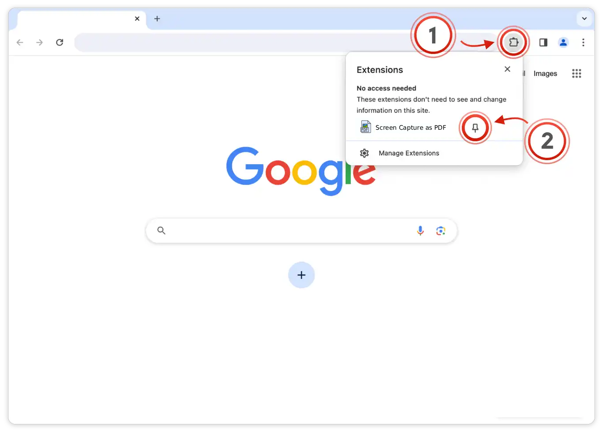
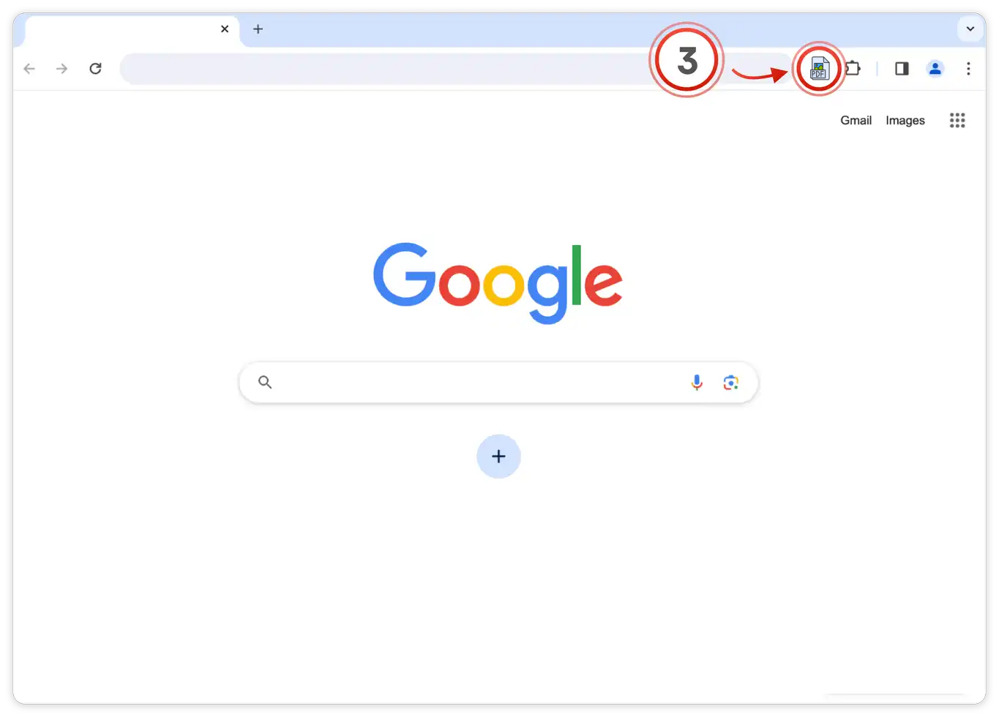

Screen Capture as PDF Installed
Click the puzzle piece (1) in the top right of your browser. Then click the pin icon (2) next to the extension:

Open the extension (3) on any page to start using Screen Capture as PDF:

Click the puzzle piece (1) in the top right of your browser. Then click the pin icon (2) next to the extension:

Open the extension (3) on any page to start using Screen Capture as PDF:
